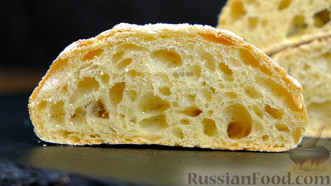
Продукты:
Мука пшеничная – 425 г + для работы с тестом Дрожжи сухие – 3 г (1 ч. ложка) Масло растительное (оливковое) – 42 мл (+ для смазывания формы) Соль – 8 г (1 ч. ложка с горкой) Вода (комнатной температуры) – 325 мл
Очень желательно для чиабатты брать "сильную" муку. Это мука, у которой содержание 13 г белка на 100 г и больше. Но у меня обычная мука высшего сорта, у нее содержание белка 10 г. Это говорит о том, что пузыри будут не такими крупными, как при использовании сильной муки.
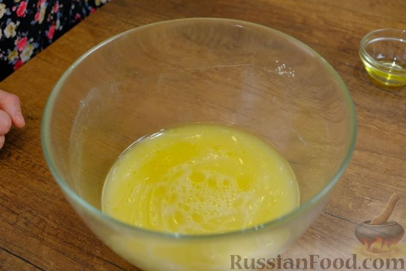
В воду всыпаем дрожжи и оставляем на 1 минуту, чтобы они разошлись. Перемешиваем, добавляем соль и масло.
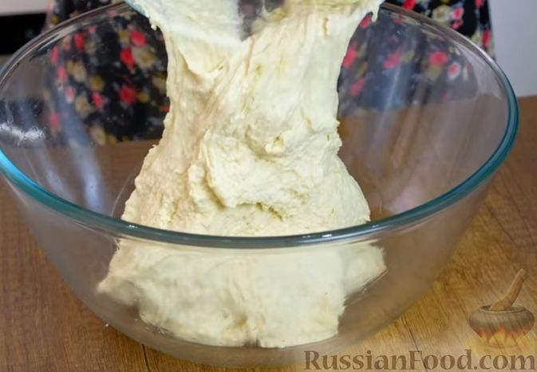
Туда же частями просеиваем муку, замешивая достаточно жидкое, липкое тесто. Форму (или миску) смазываем маслом, выкладываем тесто, плотно накрываем пленкой или крышкой. Лучше использовать квадратную форму, если имеется. Даем подойти тесту в течение 30 минут при комнатной температуре (23-24 градуса).
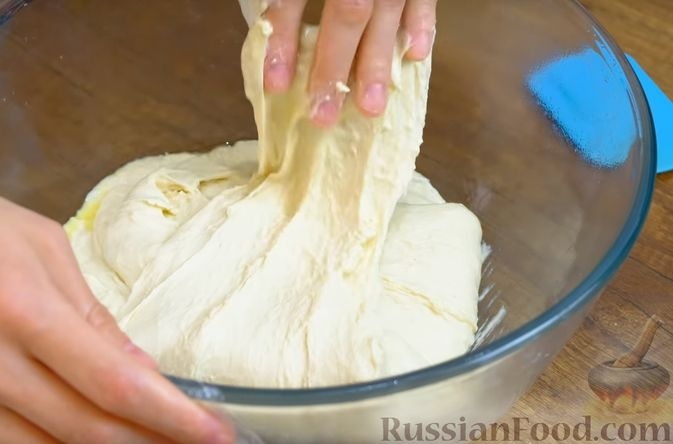
Тесто для чиабатты не обминают, его аккуратно складывают. Для этого руки смачиваем водой, поднимаем край теста руками и кладем его наверх. Так делаем с 4-х сторон, всего четыре раза.
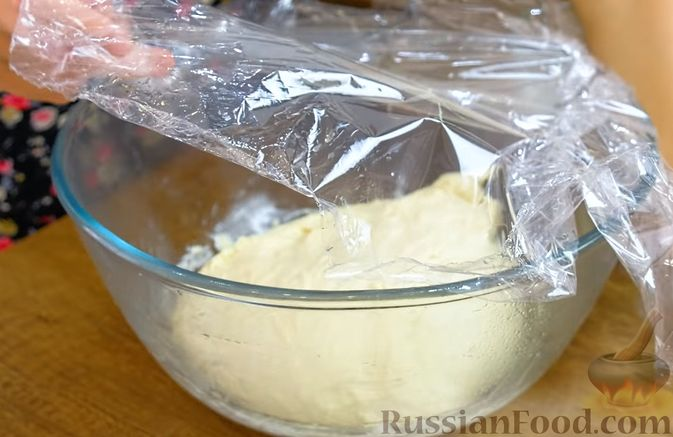
После складывания накрываем емкость с тестом пленкой и оставляем подходить еще на 30 минут. После чего - второе складывание, таким же образом. Снова накрываем пленкой и оставляем на 30 минут, чтобы тесто подошло. Затем третье складывание. Тесто меняется, становится более упругим и эластичным. Еще раз накрываем и оставляем на 30 минут.
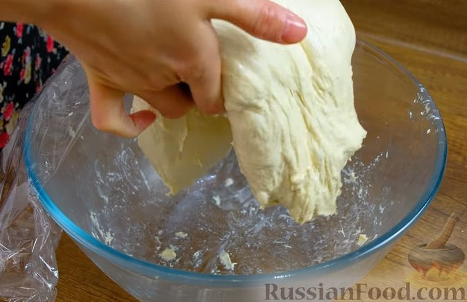
Четвертое, последнее складывание. Делаем всё так же, как и в предыдущие три раза, но затем еще приподнимаем тесто посередине и складываем пополам. Делаем так 4 раза. Тесто снова накрываем пищевой пленкой и оставляем подходить на 2 часа.
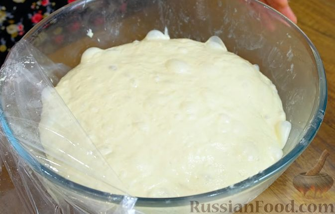
Вот такое тесто получилось через 2 часа. С тестом нужно работать аккуратно, оно "живое", в нем множество пузырьков воздуха, их нужно максимально сохранить.
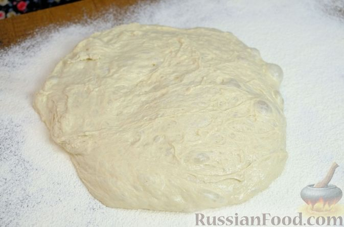
Перекладываем тесто на поверхность, щедро посыпанную мукой.
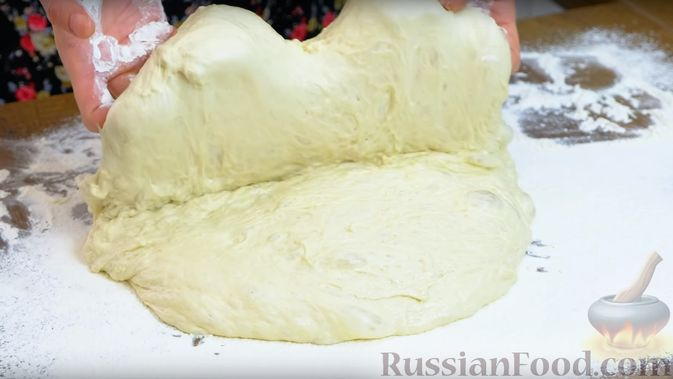
Руки также присыпаем мукой. Берем тесто за края с одной стороны и накрываем ею вторую (складываем тесто вдвое).
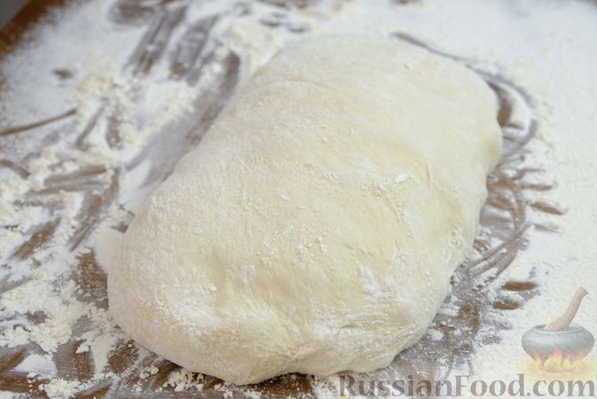
Тесто нужно разделить продольно на 2 части. Там, где будет разрез, дополнительно присыпаем мукой.
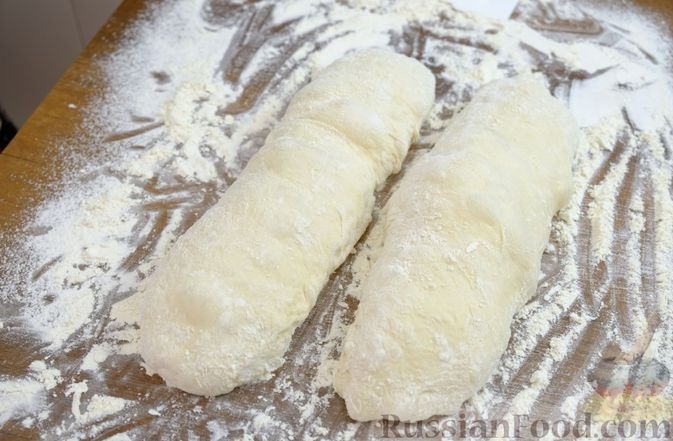
Разрезаем тесто пополам.
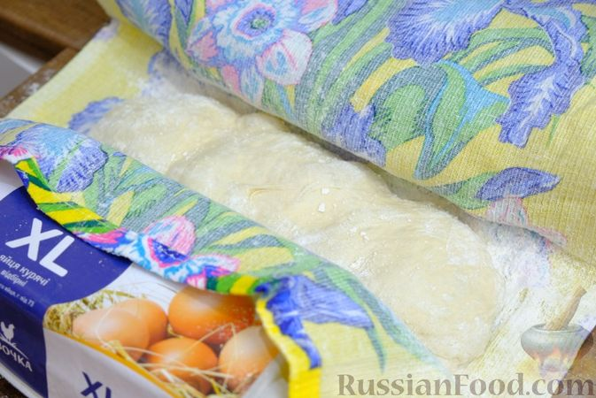
Перекладываем тесто на полотенце, щедро посыпанное мукой, и формируем для него «колыбельку». Тесто для чиабатты жидкое - чтобы оно не расплылось, его нужно ограничить по бокам. Для этого можно положить, например, бутылки или контейнеры из-под яиц. Сверху накрываем тесто полотенцем.
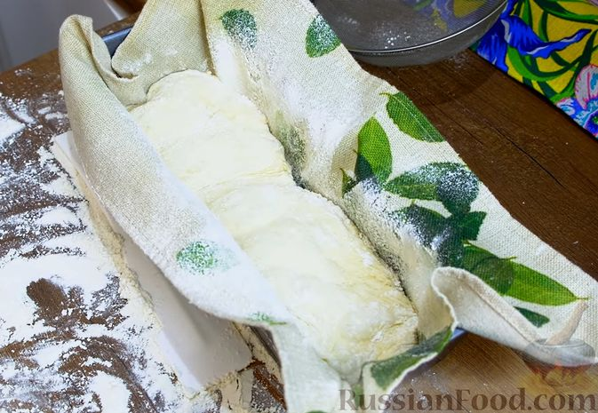
Также можно использовать прямоугольную форму. В нее кладем полотенце, затем тесто и сверху накрываем полотенцем. Оставляем тесто подходить на 20 минут.
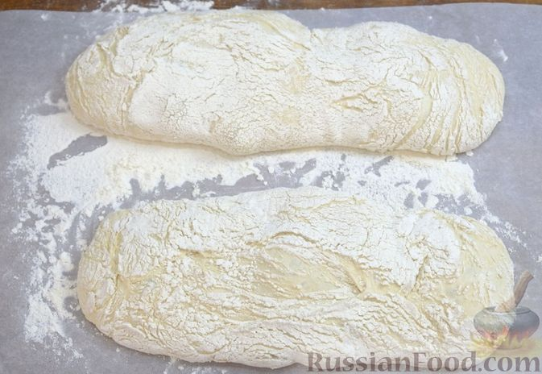
Заранее прогреваем духовку и 2 противня до 220 градусов. Один противень – для выпекания чиабатты, второй – для создания пара внутри духовки. Желательно, чтобы второй противень тоже был большим. Чиабатту аккуратно перекладываем на пергамент (пока на столе), присыпанный мукой, кверху той стороной, которая лежала на полотенце - благодаря полотенцу чиабатта получит свой характерный рисунок.
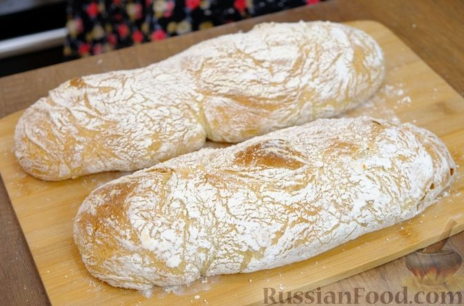
На основной противень выкладываем тесто на пергаменте. Во второй раскаленный противень наливаем кипяток (100 мл). Выпекаем чиабатту в духовке сперва 10 минут с паром. Если вода полностью не испарилась за это время, то вынимаем противень с водой из духовки. Затем выпекаем чиабатту еще 15-20 минут, ориентируясь на свою духовку и степень румяности чиабатты. По корочке можем определить готовность чиабатты: постучите по ней - должен быть глухой звук.
Готовой чиабатте даем остыть минут 15-20. С моей точки зрения, чиабатта самая вкусная, пока свежая.